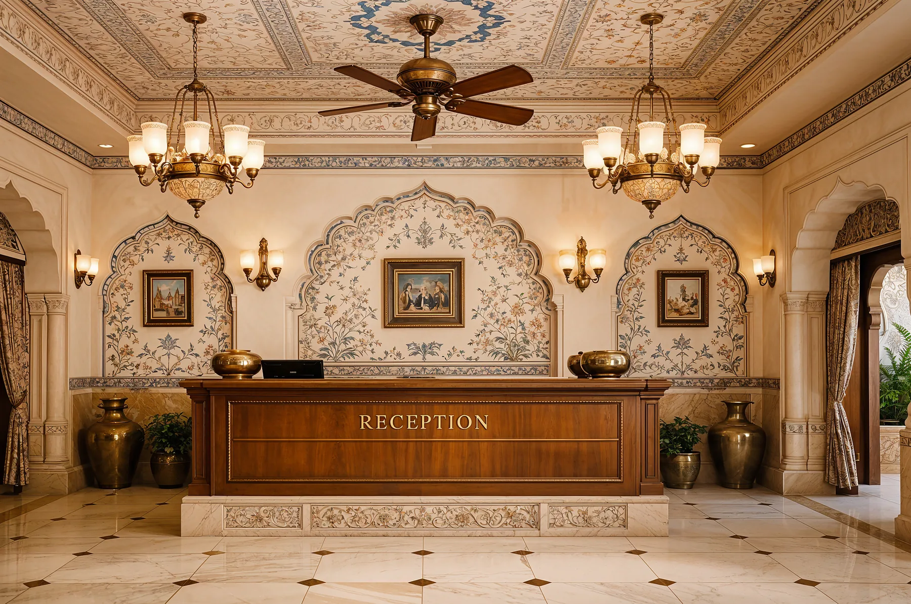
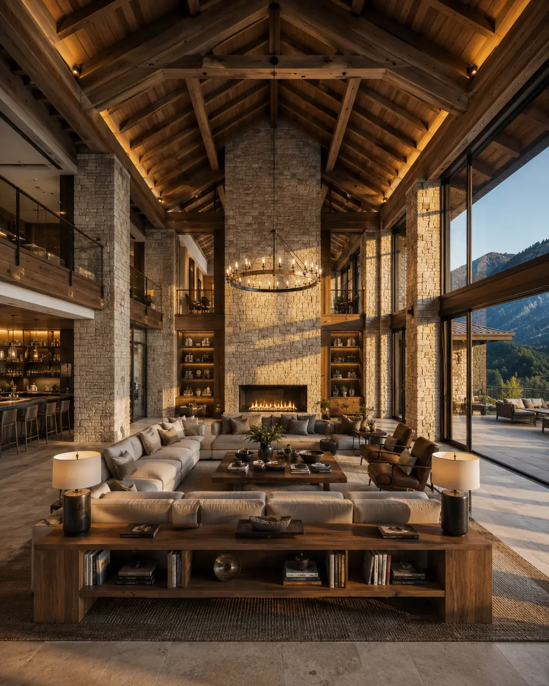

A guest decides what kind of hotel they are in within the first minute, usually before they reach the front desk. The drop-off, the doors, the height of the lobby, the light and the first place to sit all make that decision for them.
Public areas are the parts of a hotel that anyone can walk into: the arrival court, lobby, reception, lounges, lobby bar, public toilets, lift lobbies and the routes that lead to restaurants and banquet halls. In an Indian hotel they also carry far more visitors than residents. A Saturday wedding, a corporate lunch and a walk-in dinner crowd can all pass through the same lobby on the same evening.
This guide explains hotel lobby and public area design for Indian projects. It covers arrival, sizing, the front desk, classification rules, circulation, climate and materials. It is the guest-facing companion to our guide on hotel back-of-house and circulation planning, which deals with the service side behind the doors.
Why the Lobby Carries So Much Weight
The lobby does three jobs at once. It sets the tone of the brand, it sorts people towards the places they need to go, and in many hotels it earns money through a lobby bar, a café or retail. A lobby that does only the first job looks good in photographs and fails on a busy day.
It also has to work at very different levels of use. At 7 a.m. it holds a few business travellers checking out. At noon it may be empty. At 8 p.m. it may be handling a wedding baraat at the porch, a queue at the desk and a full lobby bar. Plan for the peak, then make sure the space still feels comfortable when it is nearly empty.
The lobby is also the hinge between guests and staff. The front office, luggage store, concierge and security all sit on its edges, and every one of them connects back to the service areas. If those connections are wrong, staff end up crossing guest space with trolleys and luggage, and the calm the design promised is gone.
What the Public Areas Include
The exact list depends on the hotel type and star category, but most full-service hotels in India need the following:
- Arrival court and porch. Vehicle drop-off, a covered porch, space for cars and coaches to wait, and a security point.
- Entrance and vestibule. Doors, an air lock in air-conditioned hotels, and baggage scanning where the hotel requires it.
- Lobby. The main volume that connects every other public space.
- Reception and front office. The front desk, with the front office, cashier and safe deposit behind it.
- Lounge and lobby bar. Seating for waiting guests and visitors, often with light food and drinks.
- Concierge, bell desk and luggage store. A desk near the entrance and a secure room for left luggage.
- Business centre or work area. A dedicated room, or work tables and power outlets in the lounge.
- Public toilets. Toilets for men and women, plus an accessible unisex toilet at lobby level.
- Lift lobby. The point where guests leave public space and head to their rooms.
- Routes to restaurants, banquets and the spa. Corridors, pre-function foyers and stairs that link the lobby to revenue areas.

Designing the Arrival Sequence
The lobby begins at the gate. By the time a guest steps out of the car, the drive in, the planting, the first view of the building and the porch have already set expectations. We plan the arrival as a sequence of moments.
The drive and drop-off
The approach road should give a clear first view of the building and then bring cars to a porch that is easy to find. Allow space for several cars to stop at once without blocking the drive, and plan a separate lane or bay for coaches if the hotel expects groups. Cars need a clear route on to parking or valet so the porch does not become a car park. Cornell's planning guidance for group hotels suggests a larger vehicle arrival area and more space for luggage handling, which matches what we see at Indian wedding and conference hotels.
The porch
In India the porch has to shelter guests from heavy monsoon rain and harsh summer sun. A deep canopy, a level route from car door to lobby door and enough height for coaches and decorated wedding vehicles are basic needs. The porch is also where a baraat may gather, so on wedding properties we treat it as an event space with power points, lighting and room to assemble.
Security and the threshold
Many Indian hotels screen bags and visitors at the entrance. If screening is added after design, it usually ends up as a scanner jammed against the main door. Planning a proper security zone with room to queue under cover keeps the first impression calm. Inside the doors, a vestibule or air lock holds the cooled air in and the dust out, and gives guests a moment to adjust before the lobby opens up.
How Big Should a Hotel Lobby Be?
There is no single national standard for lobby size. Brands set their own area norms, and these vary with the market. The better question is who will use the lobby, and when. The Cornell hotel planning tool frames the decision around the main guest type:
- Business hotels. Faster alternatives to a traditional front desk, and work areas in the lobby with power outlets, food and drink nearby and printing.
- Group hotels. A larger lobby for group check-in, more luggage storage and more parking for bell carts.
- Family leisure hotels. Extra seating that can see the front desk, so families can wait together.
- Remote resorts where guests arrive together. A bigger lobby and more check-in capacity than usual, at a desk or kiosks.
One rule of thumb from Canary Technologies' lobby layout guide is to allow enough open floor for roughly 10 to 15 per cent of the hotel's guest capacity at any one time. It is a reasonable starting point for residents. In India we add a second layer for non-residents: wedding guests, banquet visitors, diners and people coming for meetings. On event-led properties, these visitors can outnumber residents several times over on peak evenings.
| Hotel type | What drives lobby size | Design priority |
|---|---|---|
| City business hotel | Peak check-in and check-out, meetings in the lounge | Fast check-in, work seating, lobby café |
| Wedding and banquet hotel | Event guests arriving at the same time | Separate event foyer, large porch, wide routes |
| Resort | Group arrivals, guests lingering | Views, open-air seating, generous check-in |
| Boutique or heritage hotel | Few rooms, high expectations | Character, seated check-in, intimate scale |
| Pilgrimage hotel | Families and groups on fixed schedules | Seating for waiting groups, luggage space |
Lobby area is also decided by the overall space programme. Our guide to hotel master planning explains how public areas, rooms and back-of-house are balanced at the start of a project.
Planning the Front Desk and Reception
The front desk is where the hotel meets its guests. Its position decides how the whole lobby works.
- Visible but not in the way. Guests should see the desk as soon as they enter, without the desk blocking the main route to the lifts and restaurants.
- Watching the right places. Staff at the desk should see the entrance and the lift lobby. This helps security and lets staff greet guests by name.
- Backed by the front office. The front office, cashier, safe deposit and luggage store sit directly behind or beside the desk, with a staff door into the service corridor.
- Sized for the peak. Count check-in positions for the busiest arrival hour of the week. A resort that receives a full coach needs more positions than a city hotel of the same size.
- Seating nearby. A few chairs within sight of the desk let one person check in while the rest of the family sits.
Many hotels now use smaller desks, standing pods or seated check-in at a table. These suit boutique hotels and resorts, where a long counter can feel like a bank. City hotels with heavy peak loads still benefit from a proper counter. Whatever the format, plan conduits and power for future kiosks or tablets, because the way hotels check guests in keeps changing.

What Star Classification Asks of Public Areas
Hotels that want a star rating in India are inspected against a checklist. The Ministry of Tourism's 2018 guidelines set the national standard, and states publish their own versions. The Uttar Pradesh Guidelines for Star Classification of Hotels and Resorts follow the Ministry's guidelines and grade hotels from Bronze (equivalent to 1 star) to Diamond (5 star). Their public-area requirements are a useful design checklist.
| Requirement | Where it applies (UP guidelines) |
|---|---|
| Lounge or seating area in the lobby, with chairs, sofas, tables and a fresh floral display | All categories |
| Reception manned at least 16 hours a day, with 24-hour call service | All categories |
| Public restrooms for ladies and gents in the lounge, with hot and cold running water | All categories |
| Unisex public restroom for guests with disabilities, with a wheelchair-width door | All categories |
| Fixed anti-slip ramps at the entrance and in all public areas | All categories |
| Heating and cooling in public areas, between 20 and 28 degrees Celsius | 4 and 5 star |
| Dedicated business centre | 4 and 5 star (desirable below) |
| Left luggage room, secured or manned 24 hours | 3 star and above |
| Valet parking | 3 star and above |
Two details matter for resorts. The guidelines do not make air conditioning mandatory in lobbies, restaurants and verandahs that are open to nature on one or more sides at beach, lake, river, hill, forest and similar resorts. The business centre requirement can also be relaxed at resort destinations and pilgrimage centres. Both leave room for open-air lobbies that suit the setting.
These are the UP versions. Check the current guidelines for your state and category before finalising the plan, If you plan to upgrade later, design for the higher category from day one. An accessible toilet or a luggage room is much harder to add once the building is finished.
Circulation, Zoning and Wayfinding
A good lobby sorts people without signs doing all the work. We plan public space in three layers.
- Public. Porch, lobby, lounge, café and public toilets, open to anyone who comes in.
- Semi-public. Restaurant entrances, banquet foyers, the spa reception and meeting rooms, used by both residents and visitors.
- Private. The lift lobby and guest floors, for residents only.
The most common problem in Indian hotels is mixing event traffic with resident traffic. When a wedding of several hundred guests arrives through the main lobby, residents cannot reach the lifts, the lounge fills with people who are not staying, and the desk becomes an information counter. Wherever the site allows, give banquets their own entrance, porch and pre-function foyer, linked to the main lobby but able to work on its own. The guest who is staying should be able to walk from the car to the lift without passing through the party.
Inside the lobby, sightlines do the wayfinding. Guests should see the desk, the lifts and the way to the restaurant from the entrance. A change in floor material, a step in the ceiling or a pool of light can mark each route. Signs then confirm what the architecture has already shown. Keep the staff side in mind too: luggage, housekeeping and room service should reach the lifts through service corridors, never across the lounge. Our back-of-house planning guide explains how those service routes are laid out.
Climate, Light and Materials
Designing for Indian weather
Large glass lobbies facing west turn into greenhouses for most of the year in North India. Shade the openings with deep overhangs, verandahs or screens, and use the vestibule to hold cool air in. For resorts, the open-air option allowed by the classification guidelines works well when the lobby is planned for breeze: openings on opposite sides, high ceilings to let warm air rise and planting or water on the windward side. Our guide to climate-responsive hotel design covers these strategies in more detail.
Lighting
A lobby needs to work in bright daylight, at dusk and late at night. Layer the light: daylight where possible, warm ambient light for the evening and accent light on art, the desk and planting. Canary's guide suggests warm ambient light of about 2,700 to 3,000 Kelvin for lobbies, the same warm range as an ordinary incandescent bulb. High lobby ceilings make fixtures hard to reach, so plan access for cleaning and lamp changes from the start.
Materials and acoustics
Lobby floors take more wear than any other surface in the hotel, including luggage wheels, wet shoes in the monsoon and furniture moved for events. Natural stone and good-quality tiles last and age well. The catch is noise: stone floors, glass and high ceilings turn a busy lobby into an echo chamber. Rugs in the seating areas, fabric-backed panels, timber ceilings and plenty of soft furniture bring it back under control. Choose finishes that the housekeeping team can clean overnight without closing the lobby.
Resort Lobbies vs City Hotel Lobbies
A city hotel lobby is an indoor room that has to make its own atmosphere. A resort lobby can borrow the landscape. In our resort work, the arrival building often acts as a frame: guests step out of the car, walk through a covered space and see the view open up in front of them. The lobby becomes a pause between the road and the holiday.
Resort lobbies also tend to be smaller and more open, because guests spend their time at the pool, the restaurant or their villa. Check-in can be seated, with a welcome drink, while luggage goes straight to the room by buggy. On large sites, the lobby is also the point where the buggy network starts, so plan a buggy bay next to the porch with a covered route to the desk.

Lobbies and Public Areas in Our Work
Three projects show how we approach public areas at different scales.
- Sangam Pooja Wellness Resort, Prayagraj. On this 2.5-acre riverfront estate on the Ganga, the main palace building anchors the arrival. Our interior design gives it a vaulted, coffered lobby with a stone water feature, arched heritage dining and Indo-Islamic craft in marble inlay, carved wood, brass and lime plaster. See the Sangam Pooja interiors.
- Mukteshwar hill resort (concept). On an 11-acre ridge with 360-degree Himalayan views, the concept places the resort clubhouse at the highest point, so the lounge can look out over the mountains.
- Namah Stay, Agra (concept). For this wedding resort concept, a curved travertine reception building forms the arrival, with the event lawn and villas arranged beyond it.
Common Mistakes in Lobby Design
- Planning for the average day. A lobby that works on a quiet Tuesday can jam on a wedding Saturday.
- One entrance for everything. Residents, banquet guests, diners and staff all share the same door.
- No space for security. A scanner squeezed in after opening spoils the first impression.
- A desk that cannot see the door. Staff miss arriving guests, and security suffers.
- Glass facing west. The lobby overheats and the air conditioning never catches up.
- Hard surfaces everywhere. The lobby looks good empty and sounds harsh when full.
- Toilets as an afterthought. Public and accessible toilets hidden at the end of a corridor fail classification and annoy visitors.
- Luggage crossing the lounge. Bell carts and housekeeping trolleys use guest space because no service route was planned.
Frequently Asked Questions
How big should a hotel lobby be in India?
There is no single national standard. Size depends on the hotel type, the peak number of guests arriving together and how many non-resident visitors use the lobby. One rule of thumb is open floor for about 10 to 15 percent of guest capacity at any time, with extra space added for wedding and banquet guests on event-led properties.
What public areas does a star-rated hotel need?
Under the Uttar Pradesh star classification guidelines, which follow the Ministry of Tourism's 2018 guidelines, every category needs a lobby lounge with seating, a reception manned at least 16 hours a day, public restrooms for men and women, an accessible unisex restroom and anti-slip ramps. Higher categories add heating and cooling in public areas, a business centre, a left luggage room and valet parking.
Should a hotel lobby be air-conditioned?
City hotels in North India almost always need air conditioning in the lobby, and the classification guidelines expect heating and cooling in public areas at 4 and 5 star. For beach, lake, river, hill, forest and similar resorts, the guidelines do not make air conditioning mandatory in lobbies open to nature, so a well-shaded, cross-ventilated open lobby is a valid choice.
How do you separate wedding guests from hotel guests?
Give the banquet halls and lawns their own entrance, porch and pre-function foyer, linked to the main lobby but able to work independently. Residents should be able to walk from their car to the lifts without passing through the event, and event guests should find the venue without crossing the hotel lounge.
Where should the front desk be placed?
Place the front desk where guests see it as soon as they enter, without it blocking the route to the lifts. Staff at the desk should be able to see both the entrance and the lift lobby, and the front office, cashier and luggage store should sit directly behind it with a door to the service corridor.
Design the First Minute Carefully
The lobby is the room every guest and visitor passes through, often several times a day. It has to set the tone of the hotel, sort residents from visitors, handle the busiest evening of the year and still feel calm. Most of that is decided by planning, long before the finishes are chosen: where cars stop, how many doors there are, where the desk sits and how staff move behind the scenes.
If you are planning a hotel, resort or banquet property and want the public areas to work as well as they look, talk to our team about your site and your guests.